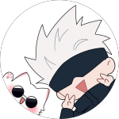
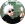
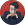
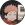
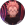
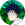
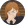

Satoru Gojo é um dos personagens principais de Jujutsu Kaisen, conhecido como o feiticeiro mais forte. Ele possui habilidades únicas, como o Limitless e o Seis Olhos, que o tornam quase invencível. Gojo é carismático, confiante e protetor com seus alunos, mas também brincalhão e provocador. Sua presença representa o equilíbrio entre poder absoluto e a responsabilidade de usá-lo para proteger os outros.

Mais sobre o Saturo Gojo.
Quem é Suguro Geto?
Quem é Yuji Itadori?
Quem é Ryomen Sukuna?
Quem é Megumi Fushiguro?
Quem é Nobara Kugisaki?